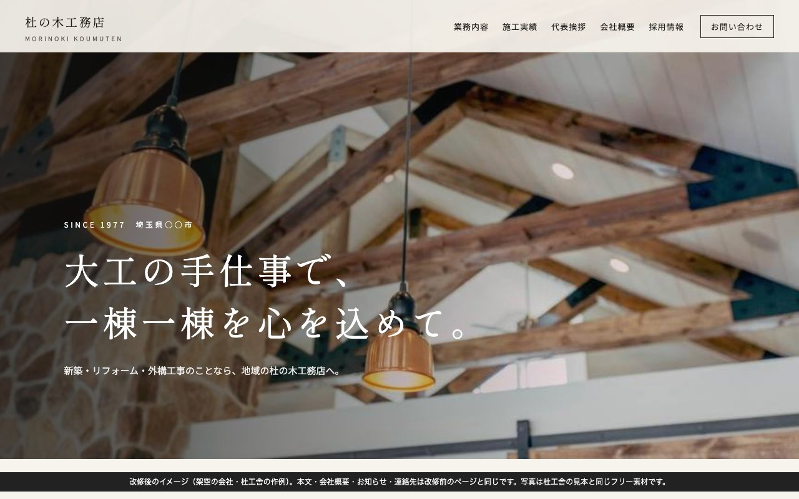
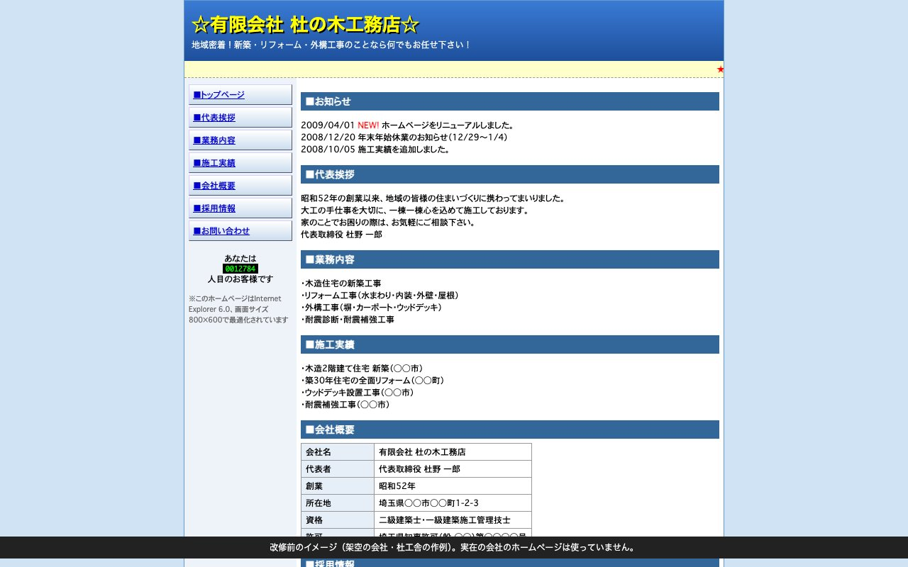

MORIKOSHA / WEBSITE RENEWAL
積み重ねた仕事を、
新しい佇まいへ。
いまあるホームページの内容を確認し、新しいデザインへ。移す範囲と機能は、ご依頼前に確認します。
98,000 円（税込）

BEFORE / AFTER
15年以上前のホームページを、
今の読みやすさへ。
会社概要も、仕事の実績も。
蓄積した内容を引き継ぎ、写真・余白・文字組みを整えます。
架空の「杜の木工務店」を使った改修イメージです。実際のお客さまの施工実績ではありません。
BEFORE改修前

パソコン中心の、昔のつくり。
小さな文字、詰まった情報、固定幅の画面。スマートフォンでは読みづらい構成です。
改修前の見本を開く ↗（新しいタブ）AFTER改修後
内容は生かして、見やすく。
写真の見せ方、文字の大きさ、情報の順序を整理。スマートフォンでも読みやすく整えます。
改修後の見本を開く ↗（新しいタブ）KEEP THE CONTENT
大切な内容を、引き継ぐ。
この見本では、お知らせ・代表挨拶・業務内容・施工実績・会社概要・お問い合わせの情報を、改修前後で引き継いでいます。
REFINE THE EXPERIENCE
見せ方と、使いやすさを整える。
デザインは淡・玄・雅・粋・理の5案から。既存ページの内容や量によって、レイアウトの一部は見本と異なります。
5つのデザインを見る ↗SCOPE & PRICE
いまのページを、
まず拝見します。
98,000 円（税込）
既存の文章・写真・リンクを確認し、引き継ぐ内容と納品するページを、ご依頼前にお約束します。制作は買い切り・制作の月額費はありません。
公開設定代行は別途48,000円（税込）。サーバー・ドメイン利用料はお客さま負担です。
- 制作期間必要な資料と改修範囲が揃ってから、約2週間。
- 既存の機能について予約・決済・会員機能・管理画面などは、引継ぎの可否と対応範囲を別途確認します。
- お渡し後の修正2週間以内、1回まで無料。以降の文章修正・写真差替えは各1回18,000円（税込）。
- まずお送りいただくもの会社名と現在のホームページのURL、気になっている点だけで構いません。
LET’S TALK
まとまっていなくても、
まずは、お話から。
会社やお店のこと、いま困っていることをお聞かせください。